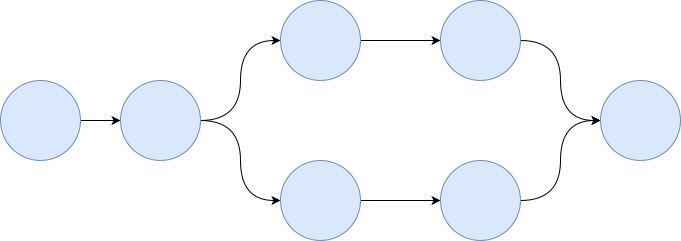
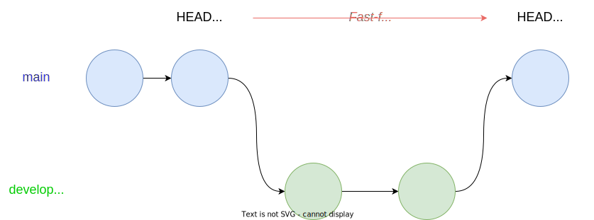

Merging
Questions
- How does Git help to merge changes on two branches?
Objectives
- Understand what fast-forwarding means
- Understand how git tries to merge two branches with divergent histories

If Alice is happy with the changes she’s made to her script, she’ll want to bring the changes back to the main branch.
First, Alice has to commit her changes to development:
git add mean.py
git commit mean.pyUsually, when bringing changes from one branch to another, we’ll start on the branch which we want to change - in this case we’re bringing changes from development to main, so we’ll checkout main:
git checkout mainSwitched to branch 'main'.To bring changes from the development branch to main, Alice uses the git merge command, specifying which branch she wants to merge:
git merge developmentUpdating dea7c3c..905d031
Fast-forward
mean.py | 3 +++
1 file changed, 3 insertions(+)Note that a single merge can make changes to multiple files: after the merge, git provides us with some feedback on what files were changed by the merge, and how extensive the changes were. In this case, we’ve only made changes to our script.
Git has also given us some information about how it performed the merge: this is the two hashes at the top in ‘Updating hash1 .. hash2’ and the message ‘Fast-forward’.
To understand what this means, we need to explore what a git repository looks like as a data structure
Git commits as a data structure
The commits which make up the history of a Git repository with multiple branches form a mathematical structure called a directed acyclic graph.
Each commit is a node in the graph. The graph is directed because every edge links a commit to one or more parents, and this relationship is one-way.
And the graph is acyclic because loops aren’t permitted - if you traverse the graph following a commit’s parents back to the root commit, you won’t pass through any of the same commits twice.

Fast-forwards
These are the simplest merge: where the two commits we are merging have a common shared history. This was the case in the example we just merged. Nothing new had been added to the main branch while Alice was working on her development branch, so there’s no need to work out how to combine the two histories.
In these cases, Git can ‘fast-forward’: it simply updates the head of our main branch to the commit at the tip of the develop branch.

Because the merge is using commits which already exist, Git doesn’t prompt us for a commit message when it can fast-forward.
Merges
We are now going to see what happens when we ask git to merge two branches which have diverged: that is, where there are new commits on either branch.
First, let’s return to our development branch and make a change at the top of our script. Alice has noticed that she’s calculating the means of all the columns, but not using the resulting value, so we’ll remove that line:
git checkout development
nano mean.py
cat mean.pyimport pandas as pd
dataframe = pd.read_csv("rgb.csv")
reds = dataframe["red"]
print(red.means())Alice then commits this change
git add mean.py
git commit mean.py -m "Removed redundant means"[development 7290b1c] Removed redundant means
1 file changed, 1 insertion(+), 1 deletion(-)Then, let’s make a change to mean.py on the main branch
git checkout main
nano mean.py
cat mean.pyimport pandas as pd
dataframe = pd.read_csv("rgb.csv")
means = dataframe.mean()
blues = dataframe["blue"]
print(blue.means())We’ve decided to calculate the mean of the blue values, by modifying the two last lines of the script.
git add mean.py
git commit mean.py -m "One line near the bottom"[main 68ccb0e] Changed subset to blue
1 file changed, 2 insertions(+), 2 deletions(-)Our two branches now have different histories: each branch has a commit which doesn’t exist in the other branch.
We can compare the two files across branches using git diff
git diff developmentdiff --git a/mean.py b/mean.py
index 8f44245..67692ae 100644
--- a/mean.py
+++ b/mean.py
@@ -1,6 +1,6 @@
import pandas as pd
dataframe = pd.read_csv("rgb.csv")
+means = dataframe.mean()
-
-reds = dataframe["red"]
-print(red.means())
+blues = dataframe["blue"]
+print(blue.means())Once again, because this is a diff from development to main, the changes we’ve made in main which aren’t in development show as inserts (+) and the changes in development which aren’t in main show as deletes (-)
We can now ask Git to merge the changes from development into our main branch
git merge developmentMerge branch 'development'
# Please enter a commit message to explain why this merge is necessary,
# especially if it merges an updated upstream into a topic branch.
#
# Lines starting with '#' will be ignored, and an empty message aborts
# the commit.When we do this, git prompts us for a commit message: this is similar to what we’ve seen earlier when we’ve committed a change, but in this case, git has pre-filled the commit message with Merge branch 'development'
The reason git is asking for a message is because merging two branches which have diverged will create a new commit, called a merge commit.
In our first merge, because fast-forwarding was possible, there was no need for a merge commit.
You have the option here to add a more complicated message explaining why you’re merging, but for now we’ll just accept git’s default message and save:
Auto-merging mean.py
Merge made by the 'ort' strategy.
mean.py | 2 +-
1 file changed, 1 insertion(+), 1 deletion(-)This output means that git has successfully merge the two versions of mean.py. Git reports that it’s used the ‘ort’ strategy - historically, git has had a number of different algorithms which it uses to try to combine commits. If you’re running an older version of Git, it might have used the ‘recursive’ strategy instead. Going into the details of how these algorithms work is a bit out of scope, but git will basically try to incorporate all of the diverging histories of each file into the result.
If we check our log:
git log --oneline06b8997 (HEAD -> main) Merge branch 'development'
68ccb0e Changed subset to blue
7290b1c (development) Removed redundant means
905d031 Subset the rgb values to just red
2408b26 Added some documentation
dea7c3c Added .gitignore
927b884 Calculates the means
6abea37 Add a line which loads the data from a CSV file
3c865ca Start a script to calculate the meanWe can see that this merge has created a new commit, and that the fact that it’s a merge commit is indicated in the history.
You can also see that commits from both main and development are now visible in the log.
Let’s see what the file actually looks like after the merge.
cat mean.pyimport pandas as pd
dataframe = pd.read_csv("rgb.csv")
blues = dataframe["blue"]
print(blue.means())We can see that git has incorporated both sets of changes: the redundant calculation of the means has been removed from the top of the file, and the subsetting is now done on “blue” rather than “red”
From Git’s point of view, the merge was a success - it’s managed to bring the divergent histories of this file into one text and kept the features of both.
It’s worth pointing out that git is only interested in whether it can combined two sets of textual changes - just because a merge has succeeded, it’s no guarantee that your code actually works, or that it will even run.
In practice, there are a lot of software engineering techniques for verifying that code still works correctly after a merge - running a battery of unit tests, for example. And it’s possible to automate this process so that tests are run when, for example, a change is made to a particular branch on a repository on GitHub. This includes tools called “GitHub Actions” which are beyond the scope of this course.
Key Points
git merge BRANCHmerges changes from one branch to another- Git will do its best to figure out how to combine changes to both branches
- Git can’t guarantee that merged code still works
All materials copyright Sydney Informatics Hub, University of Sydney